Administrador
Telão
Discussão de Proposições
Considerações Finais
Tribuna Livre

Convidados
Audiência / Seminário
Pausa da Sessão
Condolências
CONSIDERAÇÕES FINAIS
USANDO A PALAVRA:
AGUARDANDO INÍCIO
05:00
Próximo(a) Orador(a): ---
🟠 Alarme ligado
🟠 Tempo extra ligado
▶ Iniciar
⏸ Pausar
↺ Reiniciar
▶ Iniciar
Pausar
■ Encerrar
⏭ Próximo
⏮ Retornar
↺ Restaurar
🖥 Telão